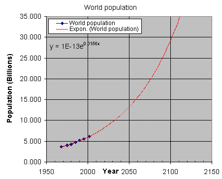

The effect of population growth
A note of warning on world population growth
| Year | World Population, Billions (10exp9) |
| 1968 | 3.679 |
| 1975 | 4.000 |
| 1980 | 4.263 |
| 1985 | 4.766 |
| 1990 | 5.234 |
| 1995 | 5.607 |
| 2002 | 6.130 |
I was alarmed to discover that world population has tripled during the course of my life. In a television program I watched a year or two ago, purported to describe the six greatest threats to mankind, to my amazement, world population growth was not even mentioned!
I have extracted some world population figures from Encyclopedia Britannica’s "Books of the Year", as you can see in the table and chart. Extrapolation of the data is achieved by the exponential trendline over the plotted data. An exponential trend is a good fit to the data and is characteristic of phenomena that grow in proportion to their size. The figures actually refer to the preceding year shown due to the data appearing in the yearbook following. The yearbooks available to me cover the period from 1968 to 2002. This data is represented on the chart by the black diamonds near the bottom left section of the curve.
The chart shows that world population could more than double to over 12 billion by the middle of the century and could be close to 30 billion by the end of the century, dwarfing our present global population. Imagine what it would be like if the trend continued into the next century. The implications are alarming. Mankind has already spread out across all inhabitable continents and large islands. Fighting will erupt when inhabitable land and fresh water becomes scarce. Forests and other natural resources will be destroyed or used up leaving increasing levels of pollution. Increasing numbers of refugees will find that the doors to the developed nations will have slammed shut. Better off people will take to living in fortress like compounds. Eventually the sanctity of life will be abandoned as hordes of desperate and starving people search for somewhere to live without hardship or overcrowding. Finally the rate of death and disease amongst the homeless will increase dramatically. Stability will be reached finally when an increase in the dying and infirm match the arrival of the newborn. These problems can already be seen in many parts of the world and have been evident for some years. We are now reaching the steep part of the growth curve.
The 1975 EB Book of the Year describes the first World Population Conference that took place in Bucharest, Romania the preceding year. The problem with global over-population was clearly recognised by many nations but little progress was achieved. Some less developed countries were more concerned with their state of underdevelopment and religious opposition occurred from other countries. As can be seen in the chart, we are right on track for a global disaster by the end of the century if a determined effort is not made to find a solution. The data in the chart is real and not hypothetical. Additional International Conferences on World Population were held in Mexico City in 1984 and in Cairo in 1994. Evidently some progress has been made in world wide recognition of the problem but with resistance to a comprehensive solution still coming from religious organisations. The chart shows that the trend has continued during the course of these conferences and it remains to be seen if the exponential trend can be brought under control.
The 1975 Encyclopedia Britannica, Book of the Year also gave the following estimates: World population first reached one billion in 1850 and two billion in 1929, the time of the great depression. The world's population has tripled from some 2 billion to over 6 billion during the course of my life so far.
The chart was produced with Microsoft Excel and the data are estimates based on demographic data from all the largest countries around the world as explained in the EB Yearbooks. As far as I can see, the only hope for mankind is universal women's liberation and equality. If more women world wide, not just in the developed countries, followed careers or public life instead of staying home to have babies the population growth rate might be slowed enough to avert a catastrophe. Unfortunately, this might not be possible in less developed countries where the population growth rate is greatest. Birth control methods are discouraged or forbidden by some religious organisations but they may eventually be obliged to reconsider. This topic has become a bit of a digression as the implications have sunk in.
Home Page, Top for navigation menu, Essay on intelligence.
David N. Warren-Smith, MSc.
Updated: 23 April 2003